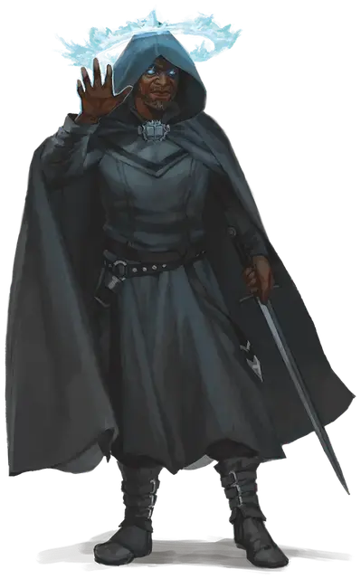

Инквизитор огня разума
Inquisitor of the Mind Fire
Средний Гуманоид

Класс Доспеха 16 (кираса)
Хиты 77 (14к8 + 14)
Скорость 30 футов
| мод | спас | ||
|---|---|---|---|
| СИЛ | 10 | +0 | +0 |
| ЛОВ | 14 | +2 | +2 |
| ТЕЛ | 12 | +1 | +1 |
| мод | спас | ||
|---|---|---|---|
| ИНТ | 17 | +3 | +6 |
| МДР | 16 | +3 | +6 |
| ХАР | 19 | +4 | +7 |
Навыки Восприятие +6, Проницательность +6
Иммунитет к состояниям испуг, очарование
Чувства истинное зрение 30 футов, пассивное Восприятие 16
Языки любые три языка, Телепатия 120 фт.
Опасность 8 (3900 опыта)
Бонус мастерства +3
Действия
Мультиатака. Инквизитор дважды атакует своим длинным серебряным мечом или дважды использует огонь разума.
Длинный серебряный меч. Рукопашная атака оружием: +7 к попаданию, досягаемость 5 фт., одна цель. Попадание: 8 (1к8 + 4) рубящего урона или 9 (1к10 + 4) рубящего урона при использовании двумя руками, и 18 (4к8) урона силовым полем.
Огонь разума. Инквизитор нацеливается на одно существо, которое он может видеть в пределах 120 футов от себя. Цель должна преуспеть в спасброске Интеллекта Сл 15, иначе получит 17 (3к8 + 4) урона психической энергией и станет ошеломлена до начала следующего хода инквизитора.
Врожденное колдовство (псионика). Инквизитор накладывает одно из следующих заклинаний, не нуждаясь ни в каких компонентах. Его базовой характеристикой является Харизма (Сл спасброска 15):
• По желанию: внушение [suggestion], магический глаз [arcane eye], обнаружение магии [detect magic], обнаружение мыслей [detect thoughts], послание [sending], рассеивание магии [dispel magic], умиротворение [calm emotions]
• 1/день каждое: изменение памяти [modify memory], множественное внушение [mass suggestion]
Приказ инквизитора (перезарядка 5-6). Каждое существо по выбору инквизитора, которое оно может видеть в пределах 60 футов от него, должно преуспеть в спасброске Мудрости Сл 15, иначе станет очарованным до начала следующего хода инквизитора. В течение хода очарованного существа инквизитор может телепатически контролировать её движение, действие или и то, и другое. Будучи подконтрольной, цель может совершать только действие Атака (цель выбирает инквизитор) или действие Рывок.
Описание
"Зло таится повсюду. С помощью нашего разума мы раскопаем его, мы проникнем в его глубины и уничтожим его.” С этими словами психически одаренный священник Ульмед основал инквизицию Ульмистов, орден псионических инквизиторов, который стремится обнаружить зло, скрывающееся в душах людей.
Незадолго до того, как граф Страд фон Зарович стал первым вампиром, Страд прошёл по землям вместе с Ульмедом. Их миссия была проста: уничтожить инфернальные силы, которые развратили мир, и гарантировать, что эти силы никогда больше не восстанут. Страд, Ульмед и их спутники охотились на демонов, нежить, аберрации и другие сверхъестественные угрозы и были неутомимыми врагами культов, таких как жрецы Осибуса. Когда Страд погрузился во тьму, Ульмед был убит горем из-за превращения своего друга и изменил миссию своей инквизиции. Вместо того, чтобы сосредоточиться на охоте на монстров, они также будут охотиться на семена зла, которые могут развратить человека.
Ульмед и его друзья Козима, Ансель и Тристиан организовали инквизицию из трёх орденов, каждый из которых специализировался на определенном типе псионической силы. Орден Козимы обуздал Огонь разума — так они называют огонь мысли, пылающий в сознании каждого человека. Они использовали эту силу, чтобы читать мысли, изменять воспоминания и доминировать над непокорными. Инквизиторы Ордена Анселя подвергли себя суровому аскетизму в попытке использовать псионическую энергию для усиления своих собственных тел. Они преуспели и стали боевой рукой инквизиции, представленной мечом. Наконец, Орден Тристиана попытался использовать интеллект для изменения окружающей среды с помощью телекинетической силы, и члены ордена стали учеными инквизиции, представленными книжниками.
Сегодня инквизиция правит городом Малитейн, огромным городом-государством к северу от первоначального месторасположения Баровии, и инквизиция посылает своих членов по всей мультивселенной, стремясь помешать работе злонамеренных культов, потусторонних ужасов и злобе смертных. Усердие инквизиторов в этой работе привело к тому, что они стали источником ужаса во многих общинах, где люди боятся, что чрезмерно усердный инквизитор может быть таким же великим злом, как и демоны, на которых первоначально охотились инквизиторы.